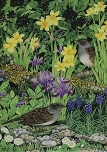

Val Gem Hughes

Dw i’n gweithio mewn arddull graffeg gan ddefnyddio ystod eang o ddefnyddiau.
As an artist I work in a graphic style, using a diverse range of materials.
01248 490212
valgemhughes@btinternet.com
TAN Y PENTRE MAWR, LLANGOED, BEAUMARIS, LL58 8RY
Ewch drwy Langoed, i fyny’r allt, cymwch y troiad cyntaf ar y dde (ddim yn addas ar gyfer bysiau), heibio cartref henoed yr Heulfre, i lawr yr allt, mae’r tŷ ar y chwith.
Through Llangoed, up the hill, take first right(unsuitable for coaches), past Heulfre nursing home, go down the hill, house on the left.